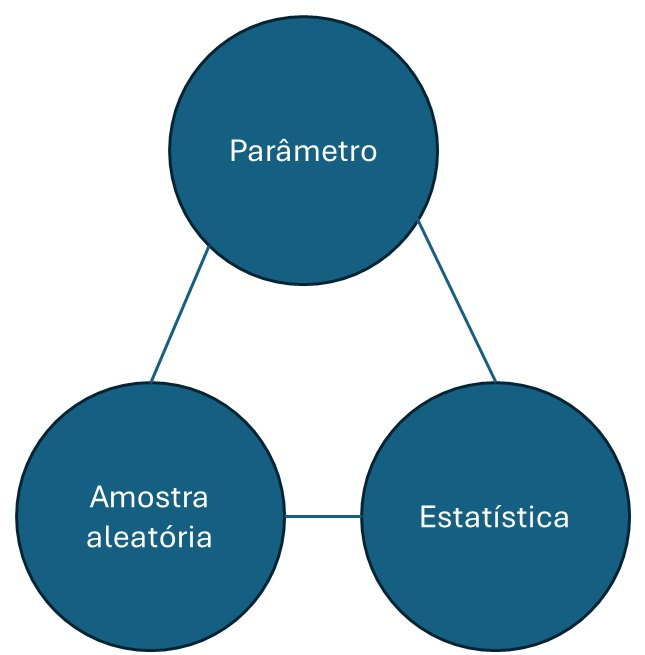
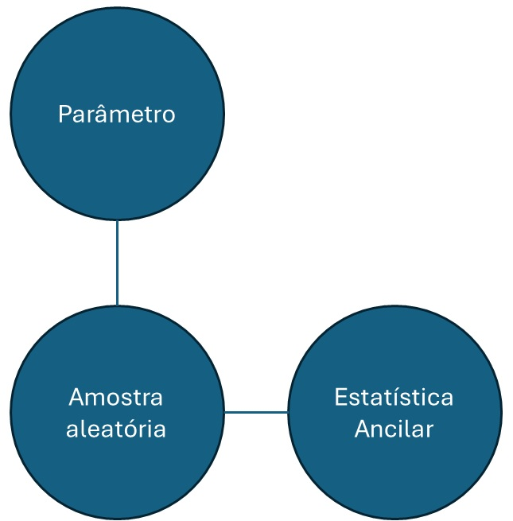
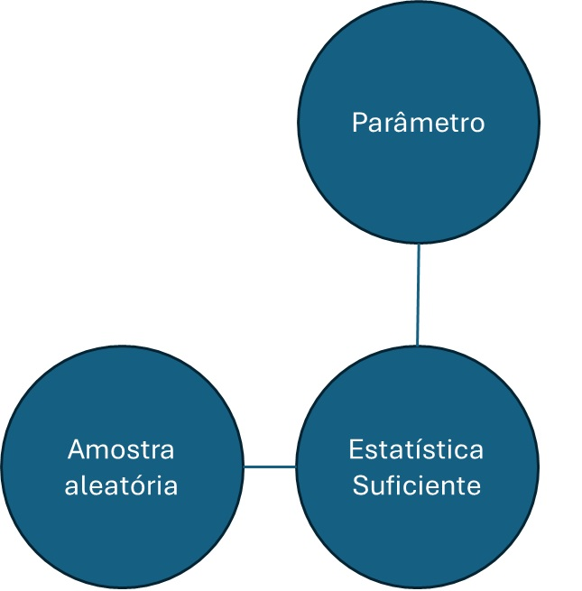
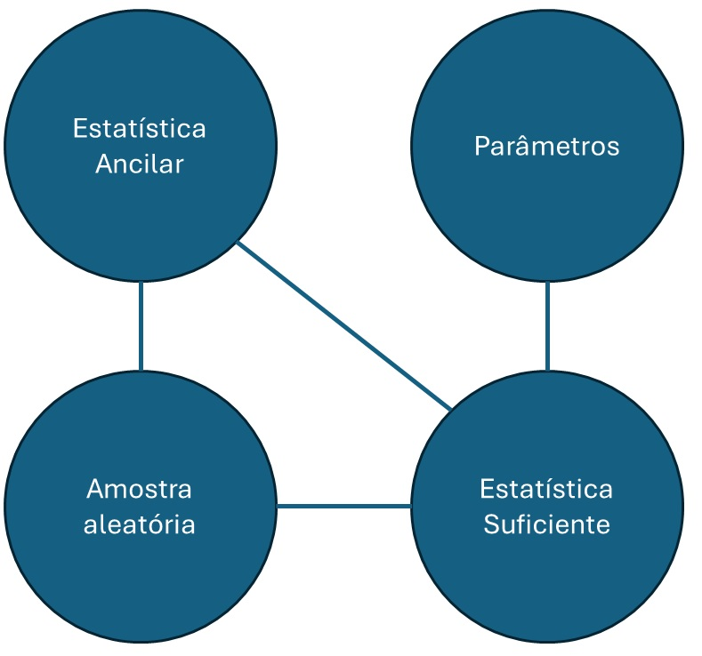
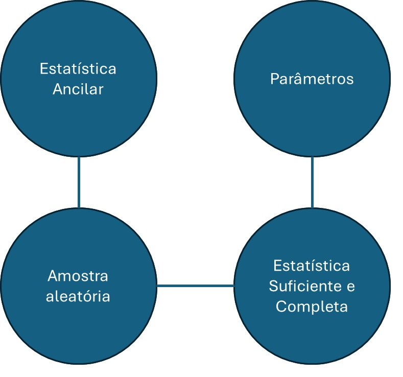

3 Estatística
3.1 Espaço amostral e a estatística como técnica para redução de dados
Anteriormente discutimos que os dados são gerados a partir de uma distribuição de probabilidades, conhecida como população. Portanto, por natureza, a amostra possui informação sobre a população.
Definição O conjunto de todas as amostras possíveis é denominado Espaço Amostral e será denotado por \(\mathcal{X}\).
O espaço amostral tende a ser mais complexo com o aumento do tamanho da amostra. A estratégia para diminuir a complexidade da análise é utilizar uma estatística.
Seja \(\textbf{X}\) uma amostra aleatória. Então, qualquer função \(T:\mathcal{X}\rightarrow \mathbb{R}^c\) é denominada estatística (de dimensão \(c\)).
O objetivo primário de uma estatística é reduzir a informação da amostra, trocando o problema de analisar a amostra original que está em um espaço de dimensão \(n\) para um espaço de dimensão \(c\leq n\).
Exemplo. Considere uma amostra de tamanho 3 da população Bernoulli(\(\theta\)). O espaço amostral é
\[\mathcal{X}=\{000,001,010,100,011,101,110,111\},\] possui dimensão três e tem oito elementos. Agora, considere a estatística \(T=X_1+X_2+X_3\). Os possíveis valores de \(T\) são \(\{0,1,2,3\}\). Esse espaço possui dimensão um e tem quatro elementos.
Como o espaço da estatística possui dimensão menor que o espaço amostral, sempre haverá perda de informação. O motivo disso é bastante simples: em geral não é possível recuperar a amostra original.
3.2 Distribuição amostral e estatística ancilar
A distribuição de uma estatística é denominada distribuição amostral. Dizemos que a estatística carrega informação sobre o parâmetro se sua distribuição amostral depende do parâmetro. Em geral, amostra aleatória, estatística e parâmetro se relacionam conforme mostra a figura abaixo.

Se a distribuição amostral da estatística não depende dos parâmetros, dizemos que essa estatística é ancilar. A figura abaixo representa a relação entre a amostra aleatória, os parâmetros e esse tipo de estatística.

Exemplo Seja \(X_1,\ldots,X_{n}\) uma amostra aleatória da população Normal\((\mu,1)\). Sabemos que a distribuição amostral da média amostral é \[\bar{X}_n\sim\hbox{Normal}\left(\mu,\frac{1}{n}\right).\] Portanto, \(\bar{X}_n\) carrega informação sobre \(\mu\). Considere agora a estatística \[W=X_1-X_2.\] Note que \(W\) é uma combinação linear de normais independentes, logo também possui distribuição normal. Como \[E(W)=E(X_1)-E(X_2)=0\] e \[Var(W)=Var(X_1-X_2)=Var(X_1)+Var(X_2)=2,\] temos que a distribuição amostral de \(W\) é Normal(0,2). Como essa distribuição não depende de \(\mu\), temos que \(W\) não carrega informação sobre o parâmetro e, portanto, é uma estatística ancilar.
Estatísticas ancilares possuem um papel relevante em problemas mais complexos, mas que estão fora do escopo dessas notas de aula. Recomendo ao leitor interessado a leitura de (Ghosh, Reid, and Fraser 2010), disponível aqui.
3.3 Estatísticas suficientes
Uma estatística é dita ser suficiente para \(\theta\) se, quando observada, ela permite descrever a distribuição da amostra aleatória sem o conhecimento de \(\theta\). Segue a definição formal.
Definição. Uma estatística \(T\) é dita ser suficiente para \(\theta\) se a distribuição \(X_1,\ldots,X_n|T=t\) não depende de \(\theta\).
A figura abaixo mostra a relação entre a amostra aleatória, os parâmetros e a estatística suficiente. Observe que a depenência da amostra em relação aos parâmetros se dá através da estatítica suficiente. 
Note que a própria amostra é uma estatística suficiente para \(\theta\). De fato, considerando o caso discreto, pode-se notar que
\[P(\textbf{X}=\textbf{x}|\textbf{X}=\textbf{x},\boldsymbol{\theta})=\frac{P(\textbf{X}=\textbf{x},\textbf{X}=\textbf{x}|\boldsymbol{\theta})}{P(\textbf{X}=\textbf{x}|\boldsymbol{\theta})}=1,\] que não depende de \(\theta\). O teorema a seguir é uma importante ferramenta para encontrar estatísticas suficientes.
Teorema do Critério da Fatoração de Neyman Seja \(\textbf{X}\) uma amostra aleatória cuja distribuição. Então, \(T\) é um estatística suficiente para \(\theta\) se e somente se existem funções \(h(\textbf{x})\) e \(g(T,\theta)\) tais que
\[\prod_{i=1}^nf(x_i|\theta)=h(\textbf{x})g(t,\theta)\] onde \(f\) é a função de densidade ou a função de probabilidade da população.
Exemplo Seja \(X_1,\ldots,X_n\) uma amostra aleatória da população Exponencial(\(\theta\)). Note que \[\prod_{i=1}^n f(x_i|\theta)=\prod_{i=1}^n \theta e^{-\theta x_i}=\underbrace{1}_{h(\textbf{x})}. \underbrace{\theta^ne^{-\theta\sum_{i=1}^n x_i}}_{g(\sum_{i=1}^n x_i,\theta)},\] logo, pelo Teorema do Critério da Fatoração de Neyman, \(T=\sum_{i=1}^{n}X_i\) é uma estatística suficiente para \(\theta\).
Exemplo. Seja \(X_1,\ldots,X_n\) uma amostra aleatória do modelo \(X\sim\hbox{Poisson}(\lambda)\). Note que
\[P(\textbf{X}=\textbf{x}|\lambda)=\prod_{i=1}^n\frac{e^{-\lambda}\lambda^{x_i}}{x_i!}=\underbrace{\prod_{i=1}^n\frac{1}{x_i!}}_{h(\textbf{x})}.\underbrace{e^{-n\lambda}\lambda^{\sum_{i=1}^n x_i}}_{g(\sum_{i=1}^n x_i,\lambda)},\] logo, pelo Teorema do Critério da Fatoração de Neyman, \(T=\sum_{i=1}^n X_i\) é suficiente para \(\lambda\).
Quando há mais de uma estatística na fatoração, elas são denominadas conjuntamente suficientes.
Exemplo. Seja \(X_1,\ldots,X_n\) uma amostra aleatória da população \(\hbox{Normal}(\mu,\sigma^2)\). Note que \[f(\textbf{x}|\mu,\sigma^2)=\prod_{i=1}^n\left(\frac{1}{2\pi\sigma^2}\right)^{1/2} e^{-\frac{1}{2\sigma^2}(x_i-\mu)^2}=\left(\frac{1}{2\pi\sigma^2}\right)^{n/2} e^{-\frac{1}{2\sigma^2}\sum_{i=1}^n(x_i-\mu)^2}.\] Como \[\sum_{i=1}^n(x_i-\mu)^2=\sum_{i=1}^n x_i^2 +n\mu^2-2\mu\sum_{i=1}^n x_i,\] teremos que \[f(\textbf{x}|\mu,\sigma^2)=\underbrace{1}_{h(\textbf{x})}.\underbrace{\left(\frac{1}{2\pi\sigma^2}\right)^{n/2} e^{-\frac{1}{2\sigma^2}\left(\sum_{i=1}^n x_i^2 +n\mu^2-2\mu\sum_{i=1}^n x_i\right)}}_{g( \sum_{i=1}^n x_{i},\sum_{i=1}^n x_i^2,\mu,\sigma^2)}.\] Portanto, pelo Teorema do Critério da Fatoração de Neyman, \(\sum_{i=1}^nX_i\) e \(\sum_{i=1}^n X_i^2\) são conjuntamente suficientes para \(\mu\) e \(\sigma^2\).
Você deve ter notado que todas as distribuições acima pertencem à família exponencial. O teorema abaixo generaliza a busca de estatísticas suficientes dentro dessa família.
Teorema Se \(X_1,\ldots,X_n\) é uma amostra aleatória de uma população na família exponencial, então \[T=\left\{\sum_{i=1}^n T_1(X_i),\ldots,\sum_{i=1}^n T_k(X_i)\right\}\] é uma estatística suficiente para \(\theta\).
Exemplo Seja \(X_1,\ldots,X_n\) uma amostra aleatória da população Gama(\(\alpha\),\(\beta\)), cuja função densidade é dada por \[f(x|\alpha,\beta)=\frac{\beta^\alpha}{\Gamma(\alpha)}x^{\alpha-1}e^{-\beta x},\] com \(\alpha,\beta>0\). Notando que \(x^\alpha=\exp\{\log(x^\alpha)\}=\exp\{\alpha\log(x)\}\), podemos reescrever essa função densidade como
\[f(x|\alpha,\beta)=\underbrace{\frac{1}{x}}_{h(x)}.\underbrace{\frac{\beta^\alpha}{\Gamma(\alpha)}}_{a(\alpha,\beta)}\exp\left\{\underbrace{\alpha}_{w_1(\alpha,\beta)}\underbrace{\log(x)}_{t_1(x)}\underbrace{-\beta}_{w_2(\alpha,\beta)} \underbrace{x}_{t_2(x)}\right\}.\] logo, a distribuição Gama pertence à família exponencial. Isso implica que as estatísticas \(T_1=\sum_{i=1}^n \log(X_i)\) e \(T_2=\sum_{i=1}^n X_i\) são conjuntamente suficientes para \(\alpha\) e \(\beta\).
Exemplo Seja \(X_1,\ldots,X_n\) uma amostra aleatória da população Beta(\(\alpha\),\(\beta\)), cuja função densidade é dada por \[f(x|\alpha,\beta)=\frac{x^{\alpha-1}(1-x)^{\beta-1}}{B(\alpha,\beta)}.\] onde \(x\in(0,1)\) e \(\alpha,\beta>0\). Notando que \[x^\alpha=\exp\{\log(x^\alpha)\}=\exp\{\alpha\log(x)\},\] e \[(1-x)^\beta=\exp\{\log((1-x)^\beta)\}=\exp\{\beta\log(1-x)\},\]
podemos reescrever essa função densidade como
\[f(x|\alpha,\beta)=\underbrace{\frac{1}{x(1-x)}}_{h(x)}.\underbrace{\frac{1}{B(\alpha,\beta)}}_{a(\alpha,\beta)}\exp\left\{\underbrace{\alpha}_{w_1(\alpha,\beta)}\underbrace{\log(x)}_{t_1(x)}+\underbrace{\beta}_{w_2(\alpha,\beta)} \underbrace{\log(1-x)}_{t_2(x)}\right\}.\] logo, a distribuição Beta pertence à família exponencial. Isso implica que as estatísticas \(T_1=\sum_{i=1}^n \log(X_i)\) e \(T_2=\sum_{i=1}^n \log(1-X_i)\) são conjuntamente suficientes para \(\alpha\) e \(\beta\).
Vejamos alguns exemplos fora da família exponencial.
Exemplo. Seja \(X_1,\ldots,X_n\) uma amostra aleatória da população Uniforme(0,\(\theta\)). Note que
\[\prod_{i=1}^n f(x_i|\theta)=\prod_{i=1}^n \frac{1}{\theta}I(x_i\leq \theta)=\frac{1}{\theta^n}\prod_{i=1}^{n}I(x_i\leq \theta).\] O produtório acima é igual a 1 se e somente se todas as observações forem menores ou iguais que \(\theta\). Para que isto ocorra, basta que a maior das observações seja menor que \(\theta\). Denotando a estatística máximo amostral por \(X_{(n)}\), teremos
\[\prod_{i=1}^nf(x_i|\theta)=\underbrace{1}_{h(\textbf{x})}.\underbrace{\frac{1}{\theta^n}I(x_{(n)}\leq\theta)}_{g(x_{(n)},\theta)},\] logo, pelo Teorema do Critério da Fatoração de Neyman, teremos que \(T=X_{(n)}\) é suficiente para \(\theta\).
Importante Sejam \(x_{(1)}\) e \(x_{(n)}\) as estatísticas mínimo e máximo de uma amostra de tamanho \(n\). Então: - \(\prod_{i=1}^n I(x_i\leq \theta)=I(x_{(n)}\leq \theta)\) - \(\prod_{i=1}^n I(x_i\geq \theta)=I(x_{(1)}\geq \theta)\) - \(\prod_{i=1}^n I(\alpha\leq x_i\leq \beta)=I(\alpha\leq x_{(1)})I(x_{(n)}\leq \beta)\)
Exemplo. Seja \(X_1,\ldots,X_n\) uma amostra aleatória da população cuja função densidade é dada por
\[f(x|\mu)=e^{-(x-\mu)}I(x\geq \mu),\] onde \(\mu>0\). Esse modelo é conhecido como exponencial deslocada. Contudo, como os valores de \(x\) dependem de \(\mu\), esta distribuição não está na família exponencial. Observe que \[\prod_{i=1}^n f(x_i|\mu)=\prod_{i=1}^n e^{-(x_i-\mu)}I(x_i\geq \mu)=e^{-\sum_{i=1}^n x_i}e^{n\mu}\prod_{i=1}^{n}I(x_i\geq \mu).\] O produtório acima é igual a 1 se e somente se todas as observações forem maiores ou iguais que \(\mu\). Para que isto ocorra, basta que \(x_{(1)}\) seja maior que \(\mu\). Então, teremos que
\[\prod_{i=1}^nf(x_i|\theta)=\underbrace{e^{-\sum_{i=1}^n x_i}}_{h(\textbf{x})}.\underbrace{e^{n\mu}I(x_{(1)}\geq \mu)}_{g(x_{(1)},\mu)},\] logo, pelo Teorema do Critério da Fatoração de Neyman, teremos que \(T=X_{(1)}\) é suficiente para \(\mu\).
Exemplo. Seja \(X_1,\ldots,X_n\) uma amostra aleatória da população Uniforme(\(\alpha,\beta\)), cuja densidade é dada por
\[f(x|\alpha,\beta)=\frac{1}{\beta-\alpha}I(\alpha\leq x\leq \beta),\] onde \(\alpha<\beta\). Sem perda de generalidade, podemos reescrever \[I(\alpha\leq x\leq \beta)=I(\alpha\leq x)I(x\leq\beta),\] logo,
\[\begin{align}\prod_{i=1}^n f(x_i|\alpha,\beta)&=\prod_{i=1}^n \frac{1}{\beta-\alpha}I(\alpha\leq x_i)I(x_i\leq\beta)\\&=\underbrace{1}_{h(\textbf{x})}.\underbrace{\frac{1}{(\beta-\alpha)^n}I(\alpha\leq x_{(1)})I(x_{(n)}\leq\beta)}_{g(x_{(1)},x_{(n)},\alpha,\beta )}.\end{align}\] logo, pelo Teorema do Critério da Fatoração de Neyman, teremos que \(X_{(1)}\) e \(X_{(n)}\) são conjuntamente suficientes para \(\alpha\) e \(\beta\).
Em determinado momento do curso, vamos estar interessados em estatísticas baseadas em estatísticas suficientes. Segue um importante resultado.
Proposição. Seja \(T\) uma estatística suficiente. Defina outra estatística \(W=g(T)\). Se \(g(.)\) possui inversa, então \(W\) também é suficiente.
Nota. Para mostrar que existe uma função inversa entre \(A\) e \(B\) você deve mostrar que é possível escrever \(A\) como função de \(B\) ou seja \[A=f(B)\] e depois deve mostrar que é possível escrever \(B\) como função de \(A\), ou seja \[B=h(A).\] Desse modo a função inversa de \(f(.)\) é \(h(.)\) ( e vice e versa).
Exemplo. Para uma amostra aleatória proveniente de um população Poisson(\(\lambda\)), mostramos que \(T=\sum_{i=1}^n X_i\) é suficiente para \(\lambda\). Observe que \[\bar{X}_n=\frac{1}{n}\sum_{i=1}^n X_i=\frac{T}{n},\] ou seja, \(\bar{X}_n\) pode ser escrita como função da estatística suficiente \(T\). Além disso, é imediato que \(T=n\bar{X}_n\). Portanto, \(T\) pode ser escrito como função de \(\bar{X}_n\), o que implica que \(\bar{X}_n\) também é suficiente para \(\lambda\).
3.3.1 Estatística suficiente e completa
Seja \(T\) uma estatística suficiente e \(U\) uma ancilar. Existem situações nas quais as estatísticas não são independentes, conforme vemos na figura abaixo. Quando isso ocorre, pode ser vantajoso utilizar o par \((T,U)\) para realizar inferências (\(U\) é denominado complemento ancilar para \(T\)).
 Uma classe de estatísticas suficientes que não necessitam de complementos ancilares é definida abaixo.
Definição (Estatística suficiente e completa). Seja \(T\) uma estatística suficiente. Dizemos que ela é completa se, para qualquer função real \(g(.)\), tem-se que, se \(E(g(T)|\theta)=0\) para todo \(\theta\), então \(g(t)=0\) para todo \(t\).
Teorema de Basu. Estatísticas suficientes e completas são independentes de estatísticas ancilares.
Portanto, na existência de estatísticas suficientes e completas, estas são as únicas necessárias para realizar inferências sobre os parâmetros populacionais (não há necessidade de se procurar por algum complemento ancilar). A figura abaixo ilustra as relações entre a amostra aleatória, os parâmetros e as estatísticas ancilares e completas.

Veremos abaixo algumas situações nas quais podemos encontrar estatísticas suficientes e completas.
Teorema Suponha que \(X_1,\ldots,X_n\) é uma amostra aleatória de uma população pertencente à família exponencial. Então, \(T(\textbf{X})=(\sum_{i=1}^nT_1(X_i),\ldots,\sum_{i=1}^nT_k(X_i))\) é uma estatística suficiente e completa se a imagem de \((w_1(\theta),\ldots,w_k(\theta))\) contém um retângulo aberto em \(\mathbb{R}^k\)
Nota. No teorema acima, se \(k=1\), basta que a imagem de \(w(\theta)\) contenha um intervalo aberto na reta. Se \(k=2\), basta que a imagem de \((w_1(\theta),w_2(\theta))\) contenha um retângulo aberto em \(\mathbb{R}^2\), e assim por diante.
Exemplo. Seja \(X\) uma variável aleatória com distribuição Poisson(\(\lambda\)). Recordemos que essa distribuição pertence à família exponencial, pois
\[P(X=x|\lambda)=\underbrace{\frac{1}{x!}}_{h(x)}\underbrace{e^{-\lambda}}_{a(\lambda)}\exp\{\;\underbrace{x}_{t(x)}.\underbrace{\log(\lambda)}_{w(\lambda)}\;\}.\] Portanto, a estatística \(T=\sum_{i=1}^nX_i\) é suficiente. Note que a imagem que \(\log(\lambda)\) é \(\mathbb{R}\), que contém infinitos intervalos abertos. Portanto, a estatística \(T\) também é completa.
O teorema abaixo mostra a existência de uma estatística suficiente e completa em outra família de distribuições.
Teorema. Suponha que \[f(x|\beta)=\frac{h(x)}{H(\beta)-H(0)}I(0<x\leq \theta),\] onde \(h(x)\geq 0\) e \[H(x)=\int_0^x h(y)dy.\]
Então, considerando uma amostra aleatória desse modelo, a estatística \(X_{(n)}\) é suficiente e completa para \(\beta\). Alternativamente, seja \[f(x|\alpha)=\frac{h(x)}{1-H(\alpha)}I(x\geq \alpha),\] onde \(h(x)\leq 0\), \(H(x)=\int_{0}^xh(y)dy\) e \(\lim_{x\rightarrow \infty}H(x)=1\). Então \(X_{(1)}\) é uma estatística suficiente e completa para \(\alpha\).
Exempo. Considere o modelo Uniforme\((0,\theta)\), cuja função densidade é dada por \[f(x|\theta)=\frac{1}{\theta}I(0<x\leq \theta).\] Vamos verificar se essa distribuição pode ser escrita conforme o descrito no teorema acima. Podemos identificar \(h(x)=1\). Logo, \[H(x)=\int_0^x 1dy=\left. y\right|_{0}^x=x.\] Como \(H(\theta)=\theta\) e \(H(0)=0\), teremos que \[f(x|\theta)=\frac{1}{\theta}I(0<x\leq\theta)=\frac{h(x)}{H(\theta)-H(0)}I(0<x\leq\theta)\] e \(X_{(n)}\) é uma estatística suficiente e completa para \(\theta\).
Exempo. Considere o modelo exponencial deslocada, cuja função densidade é dada por \[f(x|\mu)=e^{-(x-\mu)}I(x\geq \mu)=\frac{e^{-x}}{e^{-\mu}}I(x\geq \mu),.\] onde \(\mu>0\). Vamos verificar se essa distribuição pode ser escrita conforme o descrito no teorema acima. Podemos identificar \(h(x)=e^{-x}\). Logo, \[H(x)=\int_{0}^x e^{-y}dy=\left. -e^{-y}\right|_0^x=-e^{-x}+1.\] Como \(H(\mu)=1-e^{-\mu}\) e \[\lim_{x\rightarrow\infty }H(x)=1\], teremos que \[f(x|\theta)=e^{-(x-\mu)}I(x\geq\mu)=\frac{e^{-x}}{1-(1-e^{-\mu})}I(x\geq\mu)=\frac{h(x)}{1-H(x)}I(x\geq\mu)\] e \(X_{(1)}\) é uma estatística suficiente e completa para \(\mu\).